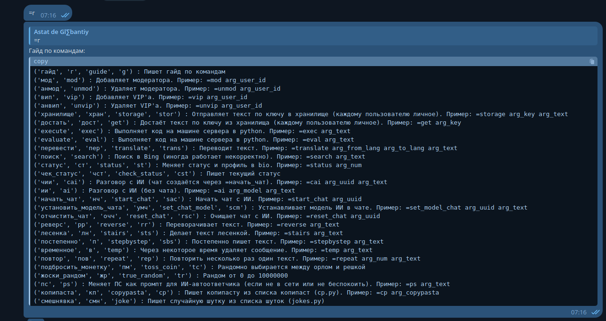
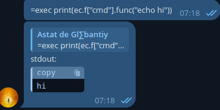

<main>
    <h1>Telegram userbot</h1>
    <div class="project-description">
      <p>Bot as a user and performing everyday functions.</p>
    </div>
    <div class="project-images">
        <section class="gallery">
          
          
        </section>
        <div id="myModal" class="modal" onclick="closeModal()">
          <span class="close" onclick="closeModal()">&times;</span>
          
          <div id="caption"></div>
        </div>
    </div>
    <div class="project-description">
      <h4>No description yet.</h4>
    </div>
    <hr>
    <h5>Version: not registered yet</h5>
    <!-- <a href="https://github.com/yourrepo/project" class="btn" target="_blank">GitHub Repo</a> -->
</main>
